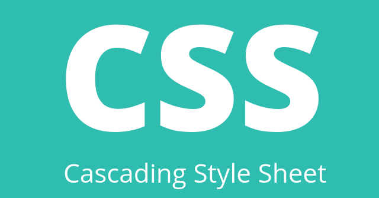

|
| ||||||
| KEMBALI | HTML | CSS | JAVA SCRIPT | PHP | WEB DESIGN | |
|
JavaScript adalah bahasa pemrograman populer yang digunakan untuk membuat situs dengan konten website yang dinamis. Faktanya, ada lebih dari 67,7 persen developer yang menggunakan JavaScript, lho! Konten dinamis artinya konten dapat bergerak atau berubah di depan layar tanpa perlu mereload halaman. Misalnya saja, fitur slideshow foto, gambar animasi, pengisian poling, dan lainnya. JavaScript sendiri sebenarnya biasanya dikolaborasikan dengan HTML dan CSS. Di mana HTML digunakan untuk membuat struktur website dan CSS untuk merancang style halaman website. Lalu, JavaScript berperan menambahkan elemen interaktif untuk meningkatkan engagement pengguna. Sebagai contoh, ketika Anda memberikan like dan komentar di Twitter. Anda bisa melihat munculnya jumlah like dan komentar yang terus bertambah secara real time, tanpa direload. Oya, JavaScript awalnya adalah bahasa pemrograman yang hanya bekerja dari sisi klien atau front end. Artinya proses pengolahan kode hanya akan berjalan di browser. Saat itu Google membuat bahasa pemrograman ini semakin populer dengan menggunakan AJAX untuk fitur suggestion di kolom pencarian. AJAX alias Asynchronous JavaScript and XML adalah teknik pembaruan data halaman web tanpa proses reload. Semenjak itu, banyak developer mulai memanfaatkan bahasa pemrograman ini untuk membuat website yang lebih menarik dan hidup. Seiring perkembangannya, JavaScript tak hanya bisa digunakan di sisi client, tetapi juga di sisi server. Eksekusi bahasa pemrograman ini di sisi server dapat dilakukan dengan memanfaatkan platform framework JavaScript seperti Node.js, React.js, dan lainnya. Dengan framework, banyak backend developer mulai banyak melirik bahasa pemrograman ini. Sehingga lahirlah produk-produk canggih seperti aplikasi untuk mobile, website aplikasi, hingga game online. | ||||||
|---|---|---|---|---|---|---|
| FUNGSI JAVASCRIPT |  | |||||